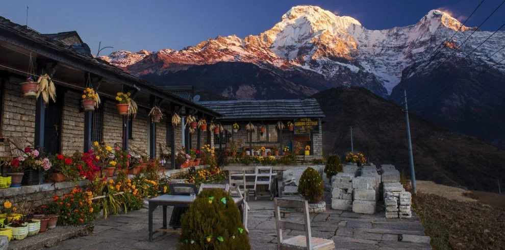
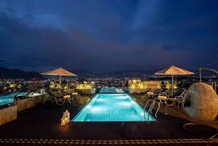

Hotel

Nepal offers a wide range of hotels and accommodations to suit every type of traveler,
from luxury seekers to budget backpackers. In major cities like Kathmandu, Pokhara,
and Chitwan, tourists can find everything from five-star hotels with world-class
amenities to charming boutique hotels, eco-resorts, and affordable guesthouses.
Many high-end hotels in Nepal feature traditional architecture, spa services, rooftop
restaurants, and beautiful views of the mountains or cityscape, offering comfort along with a cultural experience.
Ghandruk village
 For those venturing into trekking regions such as the Everest, Annapurna, or Langtang areas, cozy teahouses and lodges
are available along the trails. These provide basic yet welcoming facilities, warm meals, and a chance to interact
with local families and fellow trekkers. In more remote areas, community homestays have also become popular, giving
visitors an authentic taste of village life. No matter the budget or travel style, Nepal’s hospitality is known for
being warm, friendly, and genuine—making your stay not just comfortable, but memorable.
For those venturing into trekking regions such as the Everest, Annapurna, or Langtang areas, cozy teahouses and lodges
are available along the trails. These provide basic yet welcoming facilities, warm meals, and a chance to interact
with local families and fellow trekkers. In more remote areas, community homestays have also become popular, giving
visitors an authentic taste of village life. No matter the budget or travel style, Nepal’s hospitality is known for
being warm, friendly, and genuine—making your stay not just comfortable, but memorable.
Bedroom

Nepal, known for its stunning landscapes and rich cultural heritage, also offers a variety of hotels with swimming pools that
provide comfort and relaxation to travelers. In cities like Kathmandu and Pokhara, as well as near popular destinations such
as Chitwan National Park, many hotels feature outdoor pools surrounded by natural beauty. For instance, the Hyatt Regency
Kathmandu offers a luxurious setting with a serene pool area, while Hotel Yak & Yeti combines heritage architecture with
modern amenities, including a beautifully maintained swimming pool.
Swimming Pool

 Nepali Thakali Food
Serving Nepali Food
Nepali Breakfast
Nepali Launch
Nepali Thakali Food
Serving Nepali Food
Nepali Breakfast
Nepali Launch